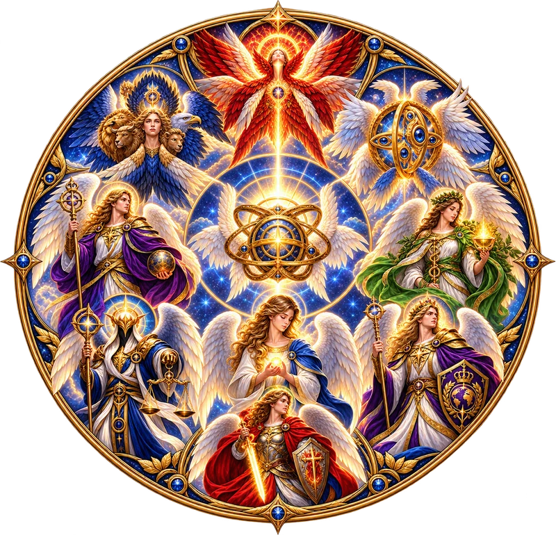
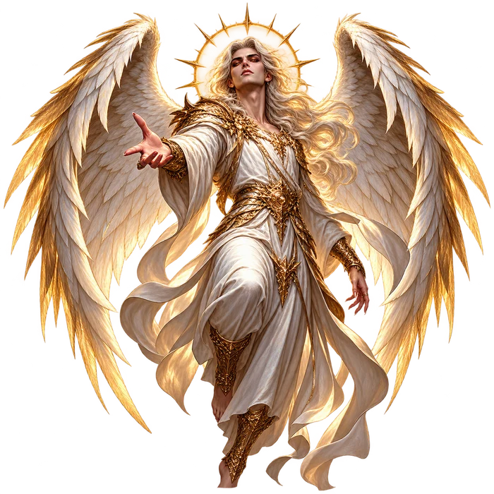
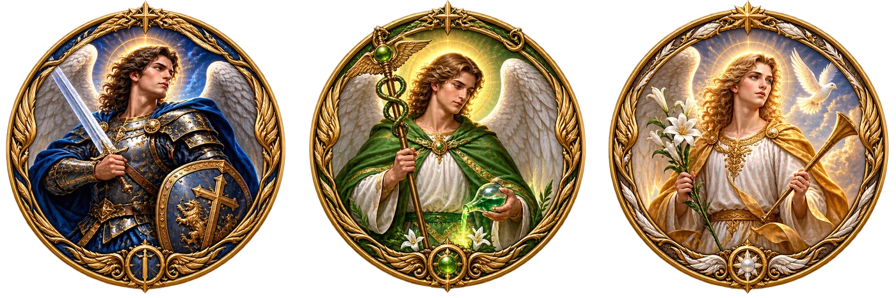
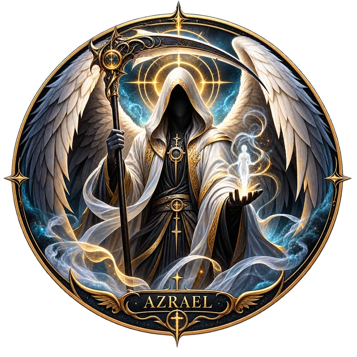

Funções · nomes · leituras
Hierarquia dos Anjos
Segundo o cânon bíblico e a tradição apócrifa
Nove coros dispostos em torno do trono, cada um com sua função, seus nomes e as passagens que os sustentam.
Toque no medalhão central de cada coro para revelar as leituras em vista explodida · toque no nome de um anjo para abrir sua ficha.
Nota especial
A posição de Lúcifer antes da queda
A tradição identifica Lúcifer ("portador da luz", do latim) como o mais alto entre os anjos antes de sua rebelião. Alguns o situam entre os Serafins (Isaías 14:12-15, a "estrela da manhã"); outros, entre os Querubins (Ezequiel 28:12-17, o "querubim ungido que cobre"). Após a queda, Lúcifer torna-se Satanás — o adversário — e sua posição hierárquica permanece vazia: um lembrete de que a rebeldia não destrói a ordem divina, apenas exclui dela o rebelde.

Nota especial
Coro celestial não é o mesmo que função ou título

Na angelologia, é importante distinguir a ordem ou coro celestial de um anjo de suas funções, títulos e atribuições tradicionais. Assim, Miguel, Gabriel e Rafael podem ser considerados Arcanjos, pertencentes à oitava ordem, mesmo quando associados, respectivamente, aos Principados, às Virtudes ou aos Sete Anjos da Presença. Essas associações não significam necessariamente uma mudança de coro, mas representam funções, títulos ou tradições específicas atribuídas a cada entidade.
O mesmo princípio pode ser aplicado a Lúcifer: em determinadas tradições, ele é descrito originalmente como um Serafim, pertencente à ordem mais elevada, mas, após sua queda, passa a ser associado ao Querubim — não necessariamente como uma simples "promoção" ou "rebaixamento" hierárquico, mas como uma representação de sua nova condição e função dentro da narrativa da queda. Dessa forma, um mesmo ser celestial pode adquirir diferentes designações conforme sua função, estado ou tradição teológica, sem que essas denominações devam ser confundidas automaticamente com sua posição original na hierarquia dos nove coros.
Nota especial
Azrael: uma tradição fora do cânon e da apócrifa judaico-cristã
Azrael não aparece, com esse nome, nem no cânon bíblico nem na tradição apócrifa judaico-cristã (como o Livro de Enoque) que orientam as demais notas desta página. Sua origem está em uma terceira tradição: o Alcorão menciona um "anjo da morte" (Malak al-Mawt) sem nomeá-lo; é somente na exegese islâmica posterior — hadiths e comentários — que esse anjo recebe o nome Azrael (ou Izrail).
O nome também aparece em fontes tardias do folclore judaico e da cabala, por vezes associado ou até confundido com Samael. Popularmente, Azrael é chamado de "arcanjo da morte" — mas, como nos casos de Miguel, Gabriel e Rafael, esse título é uma função atribuída pela tradição, não uma vaga comprovada nos nove coros descritos no cânon ou na apócrifa judaico-cristã. Por vir de fora dessas duas tradições, ele simplesmente não recebe uma posição fixa nesta hierarquia.
